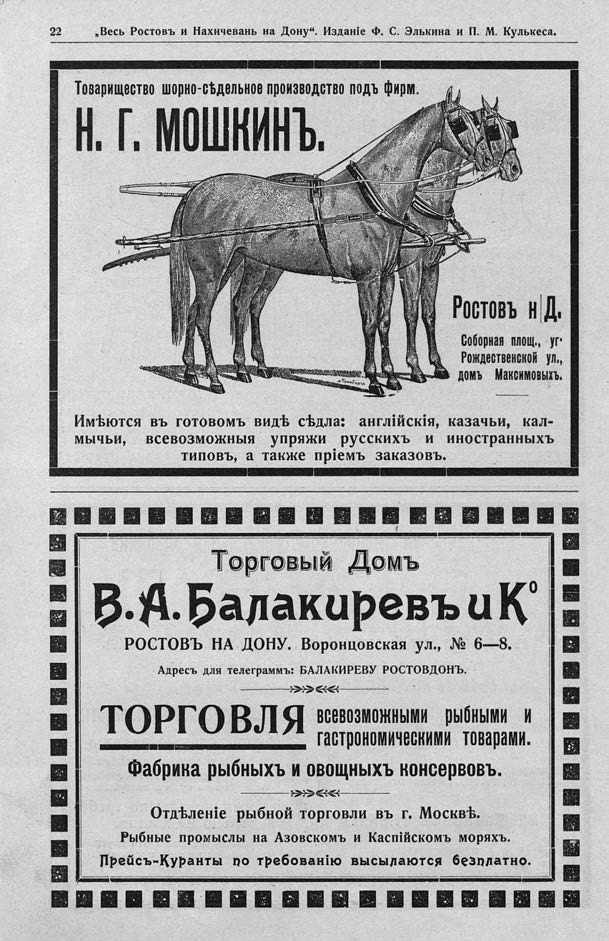

Лист источника 28
Скан

Распознанный текст
22 „Весь Ростовъ и Нахичевань на Дону“. Изданіе Ф. С. Элькина и П. М. Кулькеса.
Товарищество шорно-сѣдельное производство подъ фирм.
Н. Г. МОШКИНЪ.
Ростовъ н Д.
Соборная площ., уг.
Рождественской ул.,
домъ Максимовыхъ.
Имѣются въ готовомъ видѣ сѣдла: англійскія, казачьи, кал-
мычьи, всевозможныя упряжи русскихъ и иностранныхъ
типовъ, а также пріемъ заказовъ.
Торговый Домъ
В. А. Балакиревъ и К⁰
РОСТОВЪ НА ДОНУ. Воронцовская ул., № 6—8.
Адресъ для телеграммъ: БАЛАКИРЕВУ РОСТОВДОНЪ.
ТОРГОВЛЯ всевозможными рыбными и гастрономическими товарами.
Фабрика рыбныхъ и овощныхъ консервовъ.
Отдѣленіе рыбной торговли въ г. Москвѣ.
Рыбные промыслы на Азовскомъ и Каспійскомъ моряхъ.
Прейсъ-Куранты по требованію высылаются безплатно.